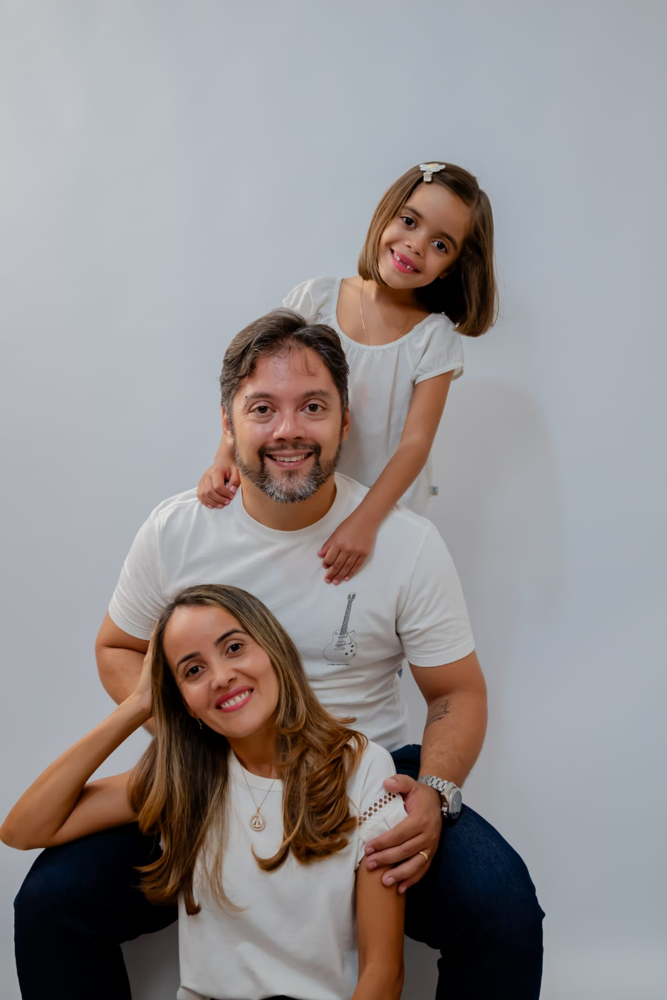
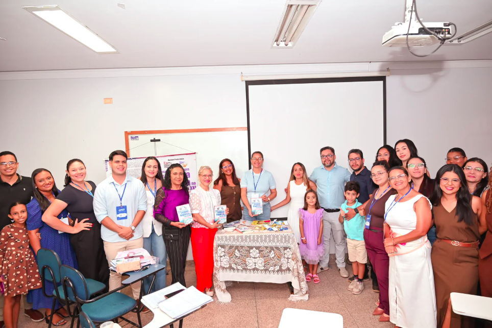
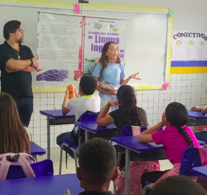
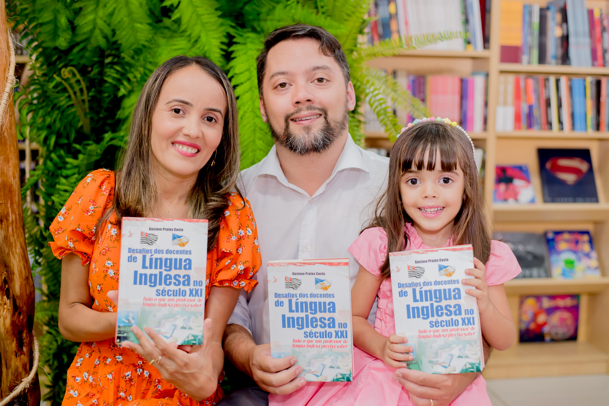
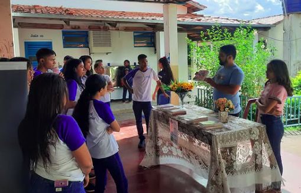
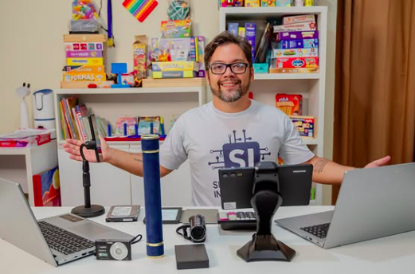

Potencializando Conhecimentos para Todas as Idades
Seja bem-vindo. Explore soluções educacionais através do centro tecnológico CEGEPP e conheça nosso Prof. Mestre Gustavo Prates Costa.
CEGEPP – Centro Educacional Gustavo e Elma Peres Prates
Fundado em 14 de novembro de 2018, o CEGEPP é uma microempresa educacional comprometida com a democratização do acesso ao conhecimento e à tecnologia. Sediado na Rua da Mangueira, Lote 5, Bairro São José, em Sítio Novo do Tocantins, o centro nasceu focado no desenvolvimento integral, na inclusão digital e na excelência acadêmica.
Com mais de 50 alunos formados, promovemos um ensino humanizado, moderno e altamente ético, preparando crianças a partir dos 5 anos, jovens e adultos para as demandas contemporâneas através de formatos dinâmicos presenciais e online.
Inclusão Digital e Crescimento
"Nossas metodologias são desenhadas para respeitar o tempo de aprendizagem individual, potencializando o uso produtivo de ferramentas de TI e capacitação idiomática."
Missão
Promover educação de alta qualidade e o pleno acesso à tecnologia para crianças, jovens e adultos, impulsionando formações personalizadas, inclusivas e acessíveis.
Visão
Ser consolidado como um centro de referência regional no Tocantins e em expansão nacional, destacando-se pela inovação contínua de suas práticas pedagógicas.
Valores
- Compromisso com Aprendizado Focado
- Ética, Transparência e Respeito
- Inovação Prática e Autonomia
- Plena Acessibilidade Social
Cursos Livres e Serviços Tecnológicos
Curso Técnico em Informática
Desenvolva competências essenciais em informática, produtividade e tecnologias digitais, dominando Windows, pacote Office, internet, hardware, software e ferramentas de gestão utilizadas pelas empresas e pelo mercado de trabalho.
Curso Técnico em administração de empresas
Capacite-se para atuar no ambiente corporativo com conhecimentos em administração, recursos humanos, finanças, marketing, negociação, gestão de projetos e empreendedorismo, utilizando as principais ferramentas digitais do mercado.
Informática KIDS
Introdução ao universo da tecnologia por meio de atividades lúdicas e educativas, estimulando criatividade, lógica, autonomia digital e o uso consciente das ferramentas tecnológicas desde os primeiros anos de aprendizado.
Língua Inglesa
Formação em quatro macro-níveis: Kids, Básico, Intermediário e Avançado. Foco em fluência, conversação ativa, compreensão estrutural e escrita metodológica.
Reforço Escolar
Atendimento focado em Educação Infantil e séries iniciais do Ensino Fundamental I (1º ao 5º ano). Alinhamento cognitivo para sanar lacunas de aprendizagem.
Design Gráfico
Domínio de softwares profissionais. Capacitação prática e conceitual em ferramentas líderes de mercado: Canva, Corel Draw 2019, Adobe Photoshop e GIMP.
Serviços de TI & Cópias
Soluções rápidas: digitação de documentos, elaboração de currículos profissionais, cópias P&B e coloridas, backup de segurança de dados e formatação rigorosa de trabalhos acadêmicos sob normas ABNT.
Portfólio

Prof. Mestre Gustavo Prates Costa
Gestor de TI, Psicopedagogo e Neurocientista
Especialista em Sistemas, com vasta experiência em docência, inclusão digital e gestão escolar corporativa.
Ver Currículo Completo ↓
Profa. Elma Peres da Silva Prates
Professora Alfabetizadora & Especialista
Bacharel em Normal Superior com 27 anos de dedicação à Educação Infantil e acompanhamento de reforço escolar fundamental.
Ver Currículo Completo ↓Prof. Mestre Gustavo Prates Costa
Tecnologia da Informação
Especialista em Sistemas, com sólida carreira em grandes corporações e liderança técnica.
Neurociência & Psicopedagogia
Atuação clínica e institucional especializada no autismo (ABA) e distúrbios de aprendizagem.
Letras & Linguística
Escritor publicado e docente com ampla proficiência no ensino de Línguas Estrangeiras Modernas.
Gestão de Projetos e Escolas
Administrador focado em metodologias ágeis e governança de centros educacionais.
Formação Acadêmica Graduações & Mestrado
Mestrado Profissional em Tecnologias Emergentes em Educação
MUST University (Estados Unidos)
Dissertação: A relação entre gamificação, neurociência e aprendizagem significativa. Orientadora: Dra. Wanusa Rodrigues da Silva.
Graduação em Engenharia de Software e Terapia Ocupacional
UNICESUMAR
Graduação em Psicopedagogia Clínica e Institucional
CESUMAR - Orientadora: Dryelly Martina Santos
- Pedagogia - CESUMAR (2022 - 2023)
- Administração - CESUMAR (2019 - 2023)
- Letras - Inglês - CESUMAR (2018 - 2022)
- Sistemas de Informação - Universidade Anhanguera de São Paulo (2006 - 2009)
Formação Complementar Selecionada
TESOL / TEFL Certification (120h) - International TESOL TEFL Academy (2022)
Harvard University (edX) - Introduction to Data Wise: Collaborative Process (80h - 2018)
Leadership and Team Development (60h) - IBMI Berlin Germany (2019)
Língua Inglesa Avançada - FISK (500h) & CNA Idiomas (360h)
Capacitações Impacta Tecnologia - SQL Server T-SQL (120h), Hardware Avançado (60h), Lógica, Arquitetura e Modelagem UML.
SOS Computadores - Formação Web Designer profissional completa (360h - 2004)
Pós-Graduações & Especializações (Lato Sensu)
Educação Especial em TEA - Linha ABA
Faculdade Famart (600h) & UNINASSAU (360h) (Em andamento)
Psicomotricidade / Fonoaudiologia Educacional
Faculdade Líbano (Carga Horária: 720h cada)
Neurociência Educacional: Cognição e Comportamento
União Brasileira de Faculdades - UNIBF (480h)
Gestão de Projetos em TI / Tradução e Revisão em Língua Inglesa
Faculdade Minas Gerais (700h cada)
Neuropsicopedagogia e Aprendizagem / EJA
Faculdade Minas Gerais & Federação das Indústrias de Minas Gerais - FIEMG
Especializações em Gestão Tecnológica e Corporativa
Master Business Information Systems (UNINOVE - 2013), TI e Análise de Sistemas (Mackenzie - 2011), Docência no Ensino Superior (CESUMAR - 2021), Metodologia de Línguas (FAVENI - 2020), Educação Infantil (CESUMAR - 2019).
Trajetória e Atuação Profissional
E.E. Manoel Estevão de Souza
Coordenador Docente de Ensino Técnico Profissionalizante em Desenvolvimento e Análise de Sistemas.
CEGEPP
Gestor Geral e Docente de Cursos Livres e Tecnologias.
Rede de Ensino Municipal (Servidor Público)
Professor de Língua Inglesa nas escolas municipais: Duque de Caxias, Rui Barbosa, Criança Feliz, Jarbas Passarinho e São Pedro.
Analista de Sistemas, Suporte e Segurança
Atuação técnica em companhias de grande porte como Antlia (Suporte de Segurança Banco Itaú/Mainframe), Softpark Informática (Líder de Suporte a Sistemas Integrados Municipais), JD Consultores (Analista de testes, bancos SQL e Oracle) e Tivit (Analista de suporte e conectividade corporativa Exchange/DB2).
Livro Publicado: "Desafios dos docentes de Língua Inglesa no século XXI"
Tudo o que um professor de língua Inglesa precisa saber. 1. ed. Imperatriz Maranhão: Estampa, 2023. 362p.
Profa. Elma Peres da Silva Prates
Perfil Profissional & Biografia
Meu nome é Elma Peres da Silva Prates, nascida na cidade de Imperatriz/MA, filha de José Peres da Silva e Gilda Alves da Silva. Fui criada em Sítio Novo do Tocantins, onde resido atualmente e construí minha consolidada trajetória pessoal e profissional.
Desde cedo, tive paixão pela educação. Aos 16 anos, após concluir o curso de Magistério, iniciei minha carreira como professora, profissão que exerço com amor e dedicação há 27 anos.
Atuo hoje como Professora alfabetizadora regente do 2º ano do ensino fundamental I na Escola Municipal Duque de Caxias. Desenvolvo também atividades no CEGEPP atuando diretamente como professora de acompanhamento pedagógico focado e reforço escolar para crianças do fundamental I (do 1º ao 5º ano).
Minha jornada na área educacional se estende por diferentes contextos e realidades. Tive a valiosa oportunidade de atuar também na metrópole de São Paulo, onde enfrentei novos desafios estruturais, ampliei drasticamente minha visão pedagógica e adquiri ricas e diversificadas experiências profissionais de mercado.
Além do segmento estrito da educação, trabalhei em setores comerciais como atendente e operadora de caixa. Essas experiências alternativas contribuíram muito para meu crescimento pessoal, capacidade de empatia, agilidade e excelência no trato direto com o público.
"Sou apaixonada por ensinar e acredito que a educação transforma vidas. Ao longo da minha caminhada, tenho buscado sempre inovar, acolher e inspirar, contribuindo para a formação de crianças conscientes, curiosas e preparadas para o futuro."
Formação Acadêmica & Especializações
Pós-Graduação Lato Sensu
Especialista em Educação Infantil e Séries Iniciais do Ensino Fundamental
Habilitação voltada ao desenvolvimento cognitivo, coordenação psicomotora e metodologias de alfabetização lúdica.
Graduação Superior
Bacharel em Normal Superior
Formação de Base
Conclusão do curso de Magistério aos 16 anos de idade.
Competências Principais
Alfabetização Ativa
Reforço do 1º ao 5º Ano
Inovação Pedagógica
Acolhimento Infantil
Galeria de Atividades
Aulas, projetos educacionais, oficinas e momentos de aprendizagem com alunos em diferentes contextos educacionais.





Pronto para dar o próximo passo?
Seja para matricular seu filho, contratar serviços corporativos de TI, formatação ABNT ou consultoria psicopedagógica, clique abaixo e inicie um atendimento.